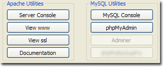
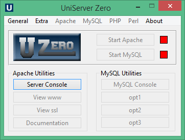

|
|
Server Utilities |
UniController has menu sections titled Apache Utilities and MySQL Utilities which provide useful features, such as single button access to phpMyAdmin and server documentation.
|  |
The image on the right shows the available menu options.
If a menu button is greyed out, it means that that option is currently unavailable. This can be for a number of reasons, such as that a related server (or servers) is not running or the appropriate plugin has not been installed.
Utility option buttons (opt1-opt3)
|
Utility option buttons (opt1-opt3) are initially unassigned (no modules installed, only UniController). However, all MySQL support modules have been initially pre-assigned to these buttons. You can change their assignment and button text, but it is recommended to keep the pre-assignments.
Each option maps to a corresponding folder in the UniServerZ\home folder. btntext = phpMyAdmin page = index.php |
 |
Parameter btntext allows you to set the button text to display. Parameter page allows you to define a page (and parameters) to run when the button is clicked.
Server Console
The Server Console opens a command window with environment variables preset and paths configured for Uniform Server utilities. Apart from cosmetics, it is identical to a standard command window (cmd).
Note: For full server console details, see Server Console page.
View www
View www is a pre-configured button to display the root folder index page in the default/portable browser. It is equivalent to typing the following into a browser's address bar:
- url: http://localhost/ - When using the standard port (80). The port is not included as this is automatically added by browser.
- url: http://localhost:8080/- When using non-standard port.
Apache searches for an index page in the following order:
index.html index.shtml index.html.var index.htm index.php3 index.php index.lua index.pl index.cgi
Server displays the first index page it finds. If an index page is not found, a directory (folder) listing is produced.
The list of indexes is defined in the Apache configuration file httpd.conf, using directive DirectoryIndex.
Note: Substitute the domain name (localhost) and port (8080) as appropriate for the values configured.
View ssl
View ssl is a pre-configured button to display the root folder index page in the default/portable browser. It is equivalent to typing the following into a browser's address bar:
- url: https://localhost/ - When using the standard port (443). The port is not included as this is automatically added by browser.
- url: https://localhost:444/ - When using non-standard port.
Apache searches for an index page in the following order:
index.html index.shtml index.html.var index.htm index.php3 index.php index.lua index.pl index.cgi
Server displays the first index page it finds. If an index page is not found, a directory (folder) listing is produced.
The list of indexes is defined in the Apache configuration file httpd.conf, using directive DirectoryIndex.
Note: Substitute the domain name (localhost) and port (444) as appropriate for the values configured.
Documentation
The Documentation button opens the index.html page from which the pages you are reading can be accessed. It follows the structure of the UniController menus. The top level describes commonly used functionality, while sub-menus detail the next level of functionality and provide more detailed information. It is self-contained, requiring no external references.
MySQL Console
The MySQL utility is a very popular admin tool. Uniform Server Zero provides a dedicated menu button (MySQL Console) that directly runs this utility in a console window, commonly referred to as the MySQL prompt. From this window, the MySQL server can be administered.
Note: For full MySQL console details, see MySQL Console page.
phpMyAdmin
phpMyAdmin is a MySQL administration tool written in PHP. It allows you to perform tasks such as creating, modifying or deleting databases. You can execute SQL statements and manage users and their permissions.
The phpMyAdmin menu button opens the phpMyAdmin index page in the default/portable browser.
- url: http://localhost:80/us_opt1/index.php
Note 1: By default, phpMyAdmin is accessible only to localhost.
Note 2: The port (80) is substituted as appropriate for the value configured.
Note 3: phpMyAdmin is an alternative to Adminer, which has a smaller foot-print.
Adminer
Adminer is a MySQL administration tool written in PHP. It allows you to perform tasks such as creating, modifying or deleting databases. You can execute SQL statements and manage users and their permissions.
The Adminer menu button opens the Adminer index page in the default/portable browser.
- url: http://localhost:80/us_opt2/index.php
Note 1: By default, Adminer is accessible only to localhost.
Note 2: The port (80) is substituted as appropriate for the value configured.
Note 3: Adminer, with its smaller foot-print, is an alternative to phpMyAdmin.